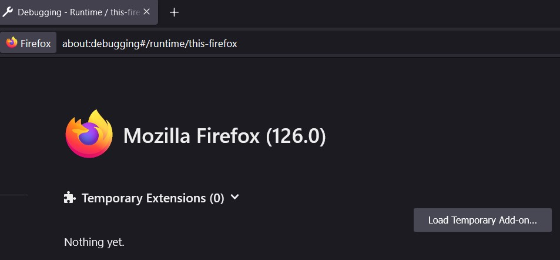

1/ Description
As a SOC engineer, we are spending time on events and alerts on our daily working life. Sometimes, we wish to have more features on the frontend to assist us when doing hunting or investigating in a incident. It could also be useful to make a proof of concept showing the usefulness of the features requested to the development team. This article is about user script which are customized JavaScript to load on the frontend of the web page. The user scripts cannot be used to alter the backend otherwise this leads to a severe security issue, however it gives to any user the possibility to add their own code to enhance some functionalities on the web page.
2/ Getting Started
I will especially use Firefox, this hasn't been tested on another browser.
To load a user script, go to "about:debugging#/runtime/this-firefox" on your firefox browser.
Then click on "Load Temporary Add-on..." and select the manifest.json that describes the structure of your user script to the browser. To load it permanently, the script must be sent to Firefox so that they can validate the maliciousness of that script by signing it and make it publicly available. Temporary Extension means that you will have to load the user script every time you close your browser. You can consider to use Firefox Developer Edition to load it permanently as well.

3/ UserScript structure
The structure of a user script can be very simple. The requirements are 2 files: manifest.json and script.js. The manifest file must contain the key "content_script" to instruct the browser to insert the given content script into pages that match the url indicated in the manifest file. Here is below an example of a manifest file:
It is possible to add the key "exclude_matches" to not take some URL into account. In the same manifest.json, it is also possible to specify many different indexes under "content_script" that indicate what user scripts will run on what URL.
For more information regarding what you can do in the manifest, it is documented on the web page of Mozilla:
4/ Example: Create a link for a value of a field
The user script will not modify anything in the backend, but can modify anything in the frontend (any user can do that without script by the way). In this example, we want to modify a HTML element to make it a link so that we can send this selected value to another application by clicking on it.
On the screenshot above, we want to make a link in the value of Event ID. Looking at the source code, we notice that two different html classes exist for the rows (one has an empty class or "expanded" and one has expanded-row class). The value of event ID cannot be view if the row is not expanded. Therefore, we need to monitor the change in the class on those tr tag and run a function everytime the script notice a change.
To target a specific element on the DOM, many functions exist in JavaScript:
selector.getElementByTagName([TAG]) // to target a tag (tbody...)
classList.toString() // to target the class (expanded for example)
The second step is to target the HTML element we want to modify. Inspecting the source code, the element is found in the expanded-row class table. The closest <div> is "<div class='col-md-4 col-xl-3 col'>" following by a span element "<span class='wrap-amywhere pa-0'>". And finally, we can get the value by looking at the attribute 'innerText'.
 After that, we have all the element to modify the element.
However, all of those tasks were manually made, how to automate it ?
After that, we have all the element to modify the element.
However, all of those tasks were manually made, how to automate it ? Mutation Observer
In Javascript, there is a class called MutationObverser. It is a class that will check changes in the DOM. The method observe() indicates which element must be observed for change. An instance of MutationObserver takes a callback function as argument. The instance will call the callback function everytime there is a change in the DOM for the observed element.But before that, we must create a listener on the document that would register a mouse click.
for (var i = 0; i < rowList.length; i++){
if (!rowList[i].classList.toString()){
watchList.push(rowList[i]);
}
else if (rowList[i].classList.toString() == "expanded-row"){
watchExpandedList.push(rowList[i]);
}
}
for (let target of watchList){
observer.observe(target, config);
}
- tr / tr.expanded
- tr.expanded-row
- tr / tr.expanded
- tr.expanded-row
[...]
- tr / tr.expanded
- tr.expanded-row
This is one use case among so many possibilities. This might change your way of working and make you become more creative without waiting for future development updates. Moreover if your web application support HTTP API, JavaScript can make those API calls using the function XLMHttpRequest().